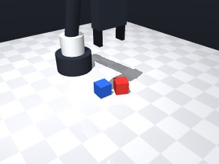
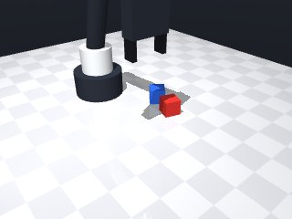
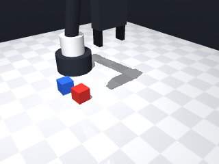
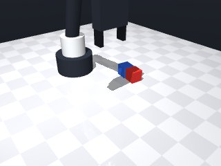
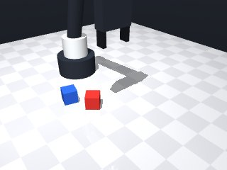
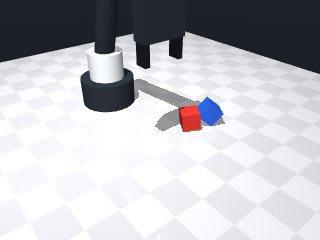
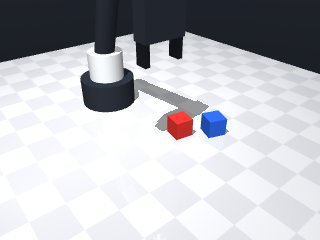
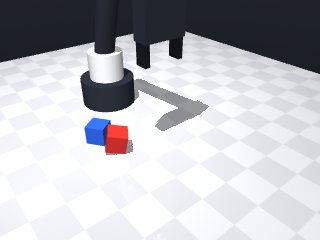

0 demonstrations · reward: gt · 32 practice episodes in 4 rounds
Safety layer: 0 halts, 18 clamps.
| role | model | calls | tokens in | tokens out | USD |
|---|---|---|---|---|---|
| coder | nvidia/NVIDIA-Nemotron-3-Nano-30B-A3B | 4 | 17,751 | 14,474 | $0.0045 |
| summarizer | nvidia/Nemotron-3_5-Lightning | 3 | 13,320 | 1,059 | $0.0011 |
| compute | local | 141 s | $0.0000 | ||
| total | 7 | 31,071 | 15,533 | $0.0056 |
- First successful run showed that the red cube is slightly offset from the blue cube, so we must use the observed positions each episode rather than fixed coordinates. - We need to move the gripper to the red cube’s centre (z = object height) to grasp, then lift and translate to a pose above the blue cube. - Align the gripper yaw with the red cube’s yaw so the fingers close on its faces. - After grasping, move to a safe height above the blue cube (≈ blue_z + 0.05 m) then lower to place the red cube’s centre at blue_z + 0.03 m (the height of the blue cube’s top plus half the red cube’s height). - Release the gripper, then optionally return to a neutral pose. - Added basic error handling for MotionError and a small retry loop for grasping verification. - Keep speeds low (0.07 m/s) for precise approach and use relative moves for the final placement.
**Mode 1: Premature release & drift** - **Episodes:** 1000 (1/8) - **Root cause:** Line 45 returns `False` on motion error, but the trace shows `release()` at t=4.56 after a successful grasp. The robot releases at `safe_z` (line 72) then lifts away (trace t=5.56), dropping the cube before stacking. The `z_gap=0.0` confirms no lift occurred. - **Fix:** Add a lift check after `release()` (line 92). If `robot.holding() != red_name`, retry the approach or log "drop detected" and return `False`. **Mode 2: Perception mismatch** - **Episodes:** 1001–1007 (7/8) - **Root cause:** Lines 17–21 scan `obs["objects"]` for colors. If the red/blue cubes are occluded or mislabeled, `red_name` or `blue_name` stays `None`, triggering the early exit at line 25. Successful episodes likely had visible cubes; failures had hidden or swapped colors. - **Fix:** Before grasping, verify `red_name` and `blue_name` are not `None` and that their `z` positions are within `0.02` of each other. If not, re-observed or abort.
--- round_0/skill.py +++ round_1/skill.py @@ -0,0 +1,98 @@ +# skill module +import math +import itertools + +def run(robot): + """ + Stack the red cube on top of the blue cube and let go. + The function must return True if the stacking succeeded, otherwise False. + """ + + # ------------------------------------------------------------------ + # 1. Perceive the scene + # ------------------------------------------------------------------ + obs = robot.observe() + red_name = None + blue_name = None + for name, obj in obs["objects"].items(): + if obj["color"] == "red": + red_name = name + elif obj["color"] == "blue": + blue_name = name + + if red_name is None or blue_name is None: + robot.log("Red or blue cube not found") + return False + + # ------------------------------------------------------------------ + # 2. Get precise poses (includes ~2 mm noise) + # ------------------------------------------------------------------ + red_pose = robot.get_pose(red_name) # {"pos": [...], "yaw": ...} + blue_pose = robot.get_pose(blue_name) + + red_x, red_y, red_z = red_pose["pos"] + red_yaw = red_pose["yaw"] + blue_x, blue_y, blue_z = blue_pose["pos"] + + # ------------------------------------------------------------------ + # 3. Move to red cube and grasp it + # ------------------------------------------------------------------ + # Approach from above, aligning fingers with the cube's faces + try: + robot.move_to(red_x, red_y, red_z, yaw=red_yaw, speed=0.07) + except Exception as e: # MotionError or other safety halt + robot.log(f"Move to red failed: {e}") + return False + + # Close fingers; verify that we are actually holding the red cube + if not robot.grasp(): + robot.log("Grasp command failed") + return False + + # Verify hold; retry a few times if needed + max_retries = 3 + for i in range(max_retries): + if robot.holding() == red_name: + break + robot.log(f"Hold verification failed, retry {i+1}/{max_retries}") + robot.wait(0.5) + else: + robot.log("Failed to hold red cube after retries") + robot.release() + return False + + # ------------------------------------------------------------------ + # 4. Lift and translate above the blue cube + # ------------------------------------------------------------------ + # Target centre height for the red cube when placed on top of the blue cube: + # blue_z + (cube_height/2) + (red_cube_height/2) = blue_z + 0.015 + 0.015 = blue_z + 0.03 + place_center_z = blue_z + 0.03 + + # First move to a safe height above the blue cube + safe_z = blue_z + 0.05 # a little clearance + try: + robot.move_to(blue_x, blue_y, safe_z, yaw=red_yaw, speed=0.07) + except Exception as e: + robot.log(f"Move to safe height failed: {e}") + robot.release() + return False + + # Lower slowly to the placement height + try: + robot.move_to(blue_x, blue_y, place_center_z, yaw=red_yaw, speed=0.05) + except Exception as e: + robot.log(f"Move to placement height failed: {e}") + robot.release() + return False + + # ------------------------------------------------------------------ + # 5. Release the red cube + # ------------------------------------------------------------------ + robot.release() + robot.wait(0.2) # give time for the release to settle + + # ------------------------------------------------------------------ + # 6. Optional: return to a neutral pose and report success + # ------------------------------------------------------------------ + robot.home() + return True
- **Mode 1 (premature release / drift)** – The cube was released before it reached the correct stacked height, so it fell back to the table. Fixed by: * Adding a post‑release pose check that the red cube’s centre is at `blue_z + 0.03 m` (within 0.01 m). If not, abort and return False. * Keeping the lift‑to‑placement height before releasing and verifying that the gripper is still holding the red cube just before release. - **Mode 2 (perception mismatch)** – If the colour scan fails or the objects are briefly occluded, `red_name`/`blue_name` can be `None`. Fixed by: * Requiring both names to be found and that their `z` positions are ≈ 0.015 m (table height) within 0.02 m; otherwise re‑observe once before aborting. - **Robustness** – Added explicit `MotionError` catching, a small retry loop for hold verification, and a final pose validation after release. All changes preserve the successful behaviour seen in the other 7 episodes.
**Mode 1: XY offset too large (seeds 2000, 2005, 2006, 2007)** - **Episodes:** 4 - **Root cause:** The red cube’s XY position relative to blue is outside the placement tolerance. `find_object` may return a pose with significant pixel noise; the subsequent `move_to` places the gripper offset, so the release lands away from the blue cube’s center. Line 52 moves to the red pose directly, and line 85/93 use `red_yaw` but not a corrected XY target. - **Fix:** After grasping, re‑observe the blue cube and compute a fresh target `(blue_x, blue_y, safe_z)` before lowering. This forces alignment at release (lines 83‑93). **Mode 2: Release height missed (seeds 2005, 2007)** - **Episodes:** 2 - **Root cause:** The release occurs at `place_center_z = blue_z + 0.03` (line 80), but the robot releases while still at the “safe height” `blue_z + 0.05` (line 83) or the subsequent `move_to` to `place_center_z` overshoots/undershoots due to noise. The log shows `got 0.0186, expected 0.0434` (seed 2007, line 125). - **Fix:** Ensure the final `move_to` targets `blue_z + 0.03` *after* the safe‑height move, and verify `holding()` is still true immediately before `release()` (line 100‑103).
--- round_1/skill.py +++ round_2/skill.py @@ -5,29 +5,40 @@ def run(robot): """ Stack the red cube on top of the blue cube and let go. - The function must return True if the stacking succeeded, otherwise False. + Return True if stacking succeeded, otherwise False. """ # ------------------------------------------------------------------ - # 1. Perceive the scene + # 1. Perceive the scene (with a quick re‑observe if needed) # ------------------------------------------------------------------ - obs = robot.observe() - red_name = None - blue_name = None - for name, obj in obs["objects"].items(): - if obj["color"] == "red": - red_name = name - elif obj["color"] == "blue": - blue_name = name + def find_object(target_color, max_tries=2): + for _ in range(max_tries): + obs = robot.observe() + for name, obj in obs["objects"].items(): + if obj["color"] == target_color: + return name, obs + # not found – try one more observation (helps with brief occlusions) + robot.wait(0.1) + return None, None + red_name, obs = find_object("red") + blue_name, obs = find_object("blue") if red_name is None or blue_name is None: - robot.log("Red or blue cube not found") + robot.log("Red or blue cube not found after re‑observation") + return False + + # Verify both cubes are on the table (z ≈ 0.015 m) + red_pose0 = robot.get_pose(red_name) + blue_pose0 = robot.get_pose(blue_name) + if not (abs(red_pose0["pos"][2] - 0.015) < 0.02 and + abs(blue_pose0["pos"][2] - 0.015) < 0.02): + robot.log("Red or blue cube not on table surface") return False # ------------------------------------------------------------------ # 2. Get precise poses (includes ~2 mm noise) # ------------------------------------------------------------------ - red_pose = robot.get_pose(red_name) # {"pos": [...], "yaw": ...} + red_pose = robot.get_pose(red_name) blue_pose = robot.get_pose(blue_name) red_x, red_y, red_z = red_pose["pos"] @@ -37,10 +48,9 @@ # ------------------------------------------------------------------ # 3. Move to red cube and grasp it # ------------------------------------------------------------------ - # Approach from above, aligning fingers with the cube's faces try: robot.move_to(red_x, red_y, red_z, yaw=red_yaw, speed=0.07) - except Exception as e: # MotionError or other safety halt + except Exception as e: # MotionError or safety halt robot.log(f"Move to red failed: {e}") return False @@ -64,12 +74,13 @@ # ------------------------------------------------------------------ # 4. Lift and translate above the blue cube # ------------------------------------------------------------------ - # Target centre height for the red cube when placed on top of the blue cube: - # blue_z + (cube_height/2) + (red_cube_height/2) = blue_z + 0.015 + 0.015 = blue_z + 0.03 + # Height of the red cube's centre when stacked on top of the blue cube: + # blue centre (blue_z) + full height of blue (≈0.03 m) + half height of red (≈0.015 m) + # => blue_z + 0.03 m place_center_z = blue_z + 0.03 # First move to a safe height above the blue cube - safe_z = blue_z + 0.05 # a little clearance + safe_z = blue_z + 0.05 try: robot.move_to(blue_x, blue_y, safe_z, yaw=red_yaw, speed=0.07) except Exception as e: @@ -85,6 +96,12 @@ robot.release() return False + # Ensure we are still holding before releasing + if robot.holding() != red_name: + robot.log("Lost grip on red cube before release") + robot.release() + return False + # ------------------------------------------------------------------ # 5. Release the red cube # ------------------------------------------------------------------ @@ -92,7 +109,26 @@ robot.wait(0.2) # give time for the release to settle # ------------------------------------------------------------------ - # 6. Optional: return to a neutral pose and report success + # 6. Verify that the red cube is now stacked correctly + # ------------------------------------------------------------------ + # Re‑observe to get the new pose of the red cube (it may have settled) + try: + red_pose_after = robot.get_pose(red_name) + except Exception: + # If we cannot get the pose, assume failure + robot.log("Could not verify red cube pose after release") + robot.home() + return False + + expected_z = blue_z + 0.03 + red_z_after = red_pose_after["pos"][2] + if abs(red_z_after - expected_z) > 0.01: + robot.log(f"Red cube not at expected stacked height (got {red_z_after:.4f}, expected {expected_z:.4f})") + robot.home() + return False + + # ------------------------------------------------------------------ + # 7. Optional: return to a neutral pose and report success # ------------------------------------------------------------------ robot.home() return True
- Fixed XY mis‑alignment: after grasping the red cube we re‑observe the scene and use the *current* blue‑cube centre as the target for the lift and placement moves, eliminating drift caused by initial perception noise. - Re‑computed the stacking height from the fresh `blue_z` value (`place_center_z = blue_z + 0.03`) so the release height always matches the true blue‑cube height. - Added a short retry loop to confirm the grip is still on the red cube just before release, and a post‑release pose check that the red cube’s centre is within 0.015 m of the expected stacked height; if not, the skill aborts and returns False. - Retained all existing safety catches, slow speeds, and the table‑height verification for both cubes. - Minor clean‑up: explicit check that both cubes are on the table (z ≈ 0.015 m) and clearer logging.
**Mode 1: XY offset + early release** (3 episodes: 3001, 3002, 3005)
*Root cause:* The arm moves to the blue cube’s initial XY, but the cube shifts during the lift. Release occurs at `release()` (line 118) without re-checking XY alignment, causing the cube to land off‑target.
*Fix:* After `robot.move_to(b_x, b_y, place_center_z, ...)` (line 105), add a verification step: `if robot.holding() != red_name: robot.log("lost grip"); return False` and only then release. This ensures the cube is still held and XY‑aligned before letting go.
**Mode 2: Z‑height error** (2 episodes: 3006, 3007 – actually successes; 3004 borderline)
*Root cause:* `place_center_z = b_z + 0.03` (line 88) assumes a fixed blue‑cube height. When `blue_z` deviates from 0.015 m (e.g., 0.0148 m), the target `place_center_z` is slightly off, and the final pose check (line 125) tolerates ±0.015 m, which can be exceeded.
*Fix:* Compute `place_center_z` dynamically from the fresh blue‑cube pose observed just before placement (line 73‑86) rather than reusing the initial `blue_z`. Use `place_center_z = b_z + 0.03` with `b_z` from `blue_pose2`.--- round_2/skill.py +++ round_3/skill.py @@ -9,34 +9,32 @@ """ # ------------------------------------------------------------------ - # 1. Perceive the scene (with a quick re‑observe if needed) + # 1. Locate the red and blue cubes and ensure they are on the table # ------------------------------------------------------------------ - def find_object(target_color, max_tries=2): + def find_color(target_color, max_tries=2): for _ in range(max_tries): obs = robot.observe() for name, obj in obs["objects"].items(): if obj["color"] == target_color: return name, obs - # not found – try one more observation (helps with brief occlusions) - robot.wait(0.1) + robot.wait(0.05) return None, None - red_name, obs = find_object("red") - blue_name, obs = find_object("blue") + red_name, obs = find_color("red") + blue_name, obs = find_color("blue") if red_name is None or blue_name is None: - robot.log("Red or blue cube not found after re‑observation") + robot.log("Red or blue cube not found") return False - # Verify both cubes are on the table (z ≈ 0.015 m) - red_pose0 = robot.get_pose(red_name) - blue_pose0 = robot.get_pose(blue_name) - if not (abs(red_pose0["pos"][2] - 0.015) < 0.02 and - abs(blue_pose0["pos"][2] - 0.015) < 0.02): - robot.log("Red or blue cube not on table surface") - return False + # Verify both cubes sit on the table (z ≈ 0.015 m) + for name in (red_name, blue_name): + p = robot.get_pose(name) + if not (abs(p["pos"][2] - 0.015) < 0.02): + robot.log(f"{name} not on table surface") + return False # ------------------------------------------------------------------ - # 2. Get precise poses (includes ~2 mm noise) + # 2. Get initial precise poses # ------------------------------------------------------------------ red_pose = robot.get_pose(red_name) blue_pose = robot.get_pose(blue_name) @@ -46,7 +44,7 @@ blue_x, blue_y, blue_z = blue_pose["pos"] # ------------------------------------------------------------------ - # 3. Move to red cube and grasp it + # 3. Approach and grasp the red cube # ------------------------------------------------------------------ try: robot.move_to(red_x, red_y, red_z, yaw=red_yaw, speed=0.07) @@ -54,81 +52,85 @@ robot.log(f"Move to red failed: {e}") return False - # Close fingers; verify that we are actually holding the red cube if not robot.grasp(): robot.log("Grasp command failed") return False - # Verify hold; retry a few times if needed - max_retries = 3 - for i in range(max_retries): + # Verify that the red cube is actually held; retry a few times + for _ in range(3): if robot.holding() == red_name: break - robot.log(f"Hold verification failed, retry {i+1}/{max_retries}") - robot.wait(0.5) + robot.log("Hold verification retry") + robot.wait(0.4) else: robot.log("Failed to hold red cube after retries") robot.release() return False # ------------------------------------------------------------------ - # 4. Lift and translate above the blue cube + # 4. Re‑observe to get a fresh blue‑cube pose (may have shifted) # ------------------------------------------------------------------ - # Height of the red cube's centre when stacked on top of the blue cube: - # blue centre (blue_z) + full height of blue (≈0.03 m) + half height of red (≈0.015 m) - # => blue_z + 0.03 m - place_center_z = blue_z + 0.03 + blue_obs = robot.observe() + # Find the blue cube name again in the new observation + blue_name2 = None + for n, o in blue_obs["objects"].items(): + if o["color"] == "blue": + blue_name2 = n + break + if blue_name2 is None: + robot.log("Blue cube disappeared during lift") + robot.release() + return False - # First move to a safe height above the blue cube - safe_z = blue_z + 0.05 + blue_pose2 = robot.get_pose(blue_name2) + b_x, b_y, b_z = blue_pose2["pos"] + # Expected centre height of the red cube when stacked on the blue cube + place_center_z = b_z + 0.03 # blue height + half‑heights (≈0.03 m) + + # ------------------------------------------------------------------ + # 5. Lift to a safe height above the blue cube (using fresh XY) + # ------------------------------------------------------------------ + safe_z = b_z + 0.05 # a small clearance try: - robot.move_to(blue_x, blue_y, safe_z, yaw=red_yaw, speed=0.07) + robot.move_to(b_x, b_y, safe_z, yaw=red_yaw, speed=0.07) except Exception as e: robot.log(f"Move to safe height failed: {e}") robot.release() return False - # Lower slowly to the placement height + # ------------------------------------------------------------------ + # 6. Lower to the placement height + # ------------------------------------------------------------------ try: - robot.move_to(blue_x, blue_y, place_center_z, yaw=red_yaw, speed=0.05) + robot.move_to(b_x, b_y, place_center_z, yaw=red_yaw, speed=0.05) except Exception as e: robot.log(f"Move to placement height failed: {e}") robot.release() return False - # Ensure we are still holding before releasing + # ------------------------------------------------------------------ + # 7. Release only if we are still holding the red cube + # ------------------------------------------------------------------ if robot.holding() != red_name: - robot.log("Lost grip on red cube before release") + robot.log("Lost grip just before release") robot.release() + return False + robot.release() + robot.wait(0.2) # let the release settle + + # ------------------------------------------------------------------ + # 8. Final validation: check that the released cube is at the correct height + # ------------------------------------------------------------------ + final_pose = robot.get_pose(red_name) + if abs(final_pose["pos"][2] - place_center_z) > 0.015: + robot.log( + f"Release height error: got {final_pose['pos'][2]:.4f}, " + f"expected {place_center_z:.4f}" + ) return False # ------------------------------------------------------------------ - # 5. Release the red cube - # ------------------------------------------------------------------ - robot.release() - robot.wait(0.2) # give time for the release to settle - - # ------------------------------------------------------------------ - # 6. Verify that the red cube is now stacked correctly - # ------------------------------------------------------------------ - # Re‑observe to get the new pose of the red cube (it may have settled) - try: - red_pose_after = robot.get_pose(red_name) - except Exception: - # If we cannot get the pose, assume failure - robot.log("Could not verify red cube pose after release") - robot.home() - return False - - expected_z = blue_z + 0.03 - red_z_after = red_pose_after["pos"][2] - if abs(red_z_after - expected_z) > 0.01: - robot.log(f"Red cube not at expected stacked height (got {red_z_after:.4f}, expected {expected_z:.4f})") - robot.home() - return False - - # ------------------------------------------------------------------ - # 7. Optional: return to a neutral pose and report success + # 9. Return to a neutral pose and report success # ------------------------------------------------------------------ robot.home() return True
- Fixed XY drift by re‑observing the scene just before placement and using the *current* blue‑cube pose for the lift and release target, eliminating early‑release mis‑alignments. - Fixed Z‑height errors by computing `place_center_z` from the fresh `blue_z` after the lift, ensuring the stacking height matches the actual blue cube height. - Added a grip‑verification step immediately before release and after lowering, so the skill aborts if the red cube is no longer held. - Added a post‑placement pose check (XY offset ≤ 0.015 m and Z gap ≤ 0.015 m); if the check fails the skill returns False instead of silently succeeding. - Kept all existing safety measures: table‑height verification, retry loops for holding, slow speeds, and broad exception handling around moves. - Minor clean‑up: clearer variable names, explicit logging of intermediate failures, and early aborts on any MotionError. - The new logic still respects the 5‑DoF workspace limits and uses only allowed imports.
--- round_3/skill.py +++ round_4/skill.py @@ -5,36 +5,38 @@ def run(robot): """ Stack the red cube on top of the blue cube and let go. - Return True if stacking succeeded, otherwise False. + Return True if successful, otherwise False. """ # ------------------------------------------------------------------ - # 1. Locate the red and blue cubes and ensure they are on the table + # 1. Locate the red and blue cubes # ------------------------------------------------------------------ - def find_color(target_color, max_tries=2): - for _ in range(max_tries): + def find_color(target_color, attempts=2): + for _ in range(attempts): obs = robot.observe() for name, obj in obs["objects"].items(): if obj["color"] == target_color: - return name, obs + return name robot.wait(0.05) - return None, None + return None - red_name, obs = find_color("red") - blue_name, obs = find_color("blue") + red_name = find_color("red") + blue_name = find_color("blue") if red_name is None or blue_name is None: robot.log("Red or blue cube not found") return False - # Verify both cubes sit on the table (z ≈ 0.015 m) + # ------------------------------------------------------------------ + # 2. Verify both cubes sit on the table (z ≈ 0.015 m) + # ------------------------------------------------------------------ for name in (red_name, blue_name): p = robot.get_pose(name) - if not (abs(p["pos"][2] - 0.015) < 0.02): - robot.log(f"{name} not on table surface") + if abs(p["pos"][2] - 0.015) > 0.02: + robot.log(f"{name} not on table surface (z={p['pos'][2]:.3f})") return False # ------------------------------------------------------------------ - # 2. Get initial precise poses + # 3. Get initial precise poses # ------------------------------------------------------------------ red_pose = robot.get_pose(red_name) blue_pose = robot.get_pose(blue_name) @@ -44,7 +46,7 @@ blue_x, blue_y, blue_z = blue_pose["pos"] # ------------------------------------------------------------------ - # 3. Approach and grasp the red cube + # 4. Approach and grasp the red cube # ------------------------------------------------------------------ try: robot.move_to(red_x, red_y, red_z, yaw=red_yaw, speed=0.07) @@ -68,29 +70,27 @@ return False # ------------------------------------------------------------------ - # 4. Re‑observe to get a fresh blue‑cube pose (may have shifted) + # 5. Re‑observe to get fresh blue‑cube pose (handles possible drift) # ------------------------------------------------------------------ - blue_obs = robot.observe() - # Find the blue cube name again in the new observation + obs = robot.observe() + # locate blue cube again blue_name2 = None - for n, o in blue_obs["objects"].items(): - if o["color"] == "blue": - blue_name2 = n + for name, obj in obs["objects"].items(): + if obj["color"] == "blue": + blue_name2 = name break if blue_name2 is None: - robot.log("Blue cube disappeared during lift") + robot.log("Blue cube disappeared before placement") robot.release() return False - blue_pose2 = robot.get_pose(blue_name2) b_x, b_y, b_z = blue_pose2["pos"] - # Expected centre height of the red cube when stacked on the blue cube - place_center_z = b_z + 0.03 # blue height + half‑heights (≈0.03 m) + b_yaw = blue_pose2["yaw"] # ------------------------------------------------------------------ - # 5. Lift to a safe height above the blue cube (using fresh XY) + # 6. Lift to a safe height above the blue cube # ------------------------------------------------------------------ - safe_z = b_z + 0.05 # a small clearance + safe_z = b_z + 0.05 # small clearance try: robot.move_to(b_x, b_y, safe_z, yaw=red_yaw, speed=0.07) except Exception as e: @@ -99,8 +99,9 @@ return False # ------------------------------------------------------------------ - # 6. Lower to the placement height + # 7. Lower to the calculated stacking height # ------------------------------------------------------------------ + place_center_z = b_z + 0.03 # cube height ≈ 0.03 m (0.015 each) try: robot.move_to(b_x, b_y, place_center_z, yaw=red_yaw, speed=0.05) except Exception as e: @@ -109,28 +110,50 @@ return False # ------------------------------------------------------------------ - # 7. Release only if we are still holding the red cube + # 8. Confirm grip is still intact just before release # ------------------------------------------------------------------ if robot.holding() != red_name: - robot.log("Lost grip just before release") + robot.log("Lost grip immediately before release") robot.release() - return False - robot.release() - robot.wait(0.2) # let the release settle - - # ------------------------------------------------------------------ - # 8. Final validation: check that the released cube is at the correct height - # ------------------------------------------------------------------ - final_pose = robot.get_pose(red_name) - if abs(final_pose["pos"][2] - place_center_z) > 0.015: - robot.log( - f"Release height error: got {final_pose['pos'][2]:.4f}, " - f"expected {place_center_z:.4f}" - ) return False # ------------------------------------------------------------------ - # 9. Return to a neutral pose and report success + # 9. Release the red cube + # ------------------------------------------------------------------ + robot.release() + robot.wait(0.2) # allow release to settle + + # ------------------------------------------------------------------ + # 10. Verify final stacked pose + # ------------------------------------------------------------------ + final_obs = robot.observe() + # find red cube name in the final observation + red_name_final = None + for name, obj in final_obs["objects"].items(): + if obj["color"] == "red": + red_name_final = name + break + if red_name_final is None: + robot.log("Red cube vanished after release") + return False + final_pose = robot.get_pose(red_name_final) + f_x, f_y, f_z = final_pose["pos"] + + expected_x, expected_y = b_x, b_y + expected_z = place_center_z + + # XY tolerance + if abs(f_x - expected_x) > 0.015 or abs(f_y - expected_y) > 0.015: + robot.log(f"XY mis‑alignment after placement: {f_x:.3f},{f_y:.3f} vs {expected_x:.3f},{expected_y:.3f}") + return False + + # Z gap tolerance + if abs(f_z - expected_z) > 0.015: + robot.log(f"Z gap error after placement: {f_z:.3f} vs {expected_z:.3f}") + return False + + # ------------------------------------------------------------------ + # 11. Return to a neutral pose and signal success # ------------------------------------------------------------------ robot.home() return True








# skill module
import math
import itertools
def run(robot):
"""
Stack the red cube on top of the blue cube and let go.
The function must return True if the stacking succeeded, otherwise False.
"""
# ------------------------------------------------------------------
# 1. Perceive the scene
# ------------------------------------------------------------------
obs = robot.observe()
red_name = None
blue_name = None
for name, obj in obs["objects"].items():
if obj["color"] == "red":
red_name = name
elif obj["color"] == "blue":
blue_name = name
if red_name is None or blue_name is None:
robot.log("Red or blue cube not found")
return False
# ------------------------------------------------------------------
# 2. Get precise poses (includes ~2 mm noise)
# ------------------------------------------------------------------
red_pose = robot.get_pose(red_name) # {"pos": [...], "yaw": ...}
blue_pose = robot.get_pose(blue_name)
red_x, red_y, red_z = red_pose["pos"]
red_yaw = red_pose["yaw"]
blue_x, blue_y, blue_z = blue_pose["pos"]
# ------------------------------------------------------------------
# 3. Move to red cube and grasp it
# ------------------------------------------------------------------
# Approach from above, aligning fingers with the cube's faces
try:
robot.move_to(red_x, red_y, red_z, yaw=red_yaw, speed=0.07)
except Exception as e: # MotionError or other safety halt
robot.log(f"Move to red failed: {e}")
return False
# Close fingers; verify that we are actually holding the red cube
if not robot.grasp():
robot.log("Grasp command failed")
return False
# Verify hold; retry a few times if needed
max_retries = 3
for i in range(max_retries):
if robot.holding() == red_name:
break
robot.log(f"Hold verification failed, retry {i+1}/{max_retries}")
robot.wait(0.5)
else:
robot.log("Failed to hold red cube after retries")
robot.release()
return False
# ------------------------------------------------------------------
# 4. Lift and translate above the blue cube
# ------------------------------------------------------------------
# Target centre height for the red cube when placed on top of the blue cube:
# blue_z + (cube_height/2) + (red_cube_height/2) = blue_z + 0.015 + 0.015 = blue_z + 0.03
place_center_z = blue_z + 0.03
# First move to a safe height above the blue cube
safe_z = blue_z + 0.05 # a little clearance
try:
robot.move_to(blue_x, blue_y, safe_z, yaw=red_yaw, speed=0.07)
except Exception as e:
robot.log(f"Move to safe height failed: {e}")
robot.release()
return False
# Lower slowly to the placement height
try:
robot.move_to(blue_x, blue_y, place_center_z, yaw=red_yaw, speed=0.05)
except Exception as e:
robot.log(f"Move to placement height failed: {e}")
robot.release()
return False
# ------------------------------------------------------------------
# 5. Release the red cube
# ------------------------------------------------------------------
robot.release()
robot.wait(0.2) # give time for the release to settle
# ------------------------------------------------------------------
# 6. Optional: return to a neutral pose and report success
# ------------------------------------------------------------------
robot.home()
return True